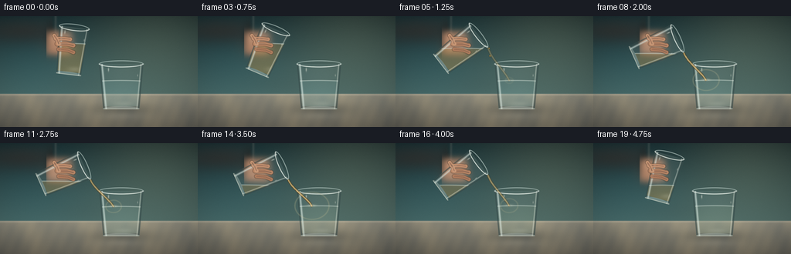
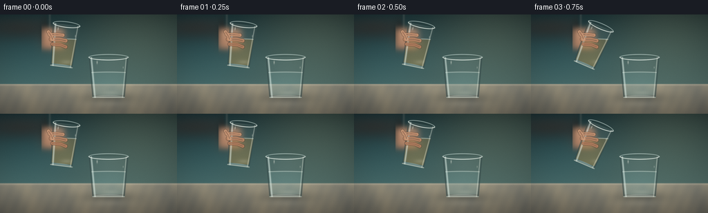
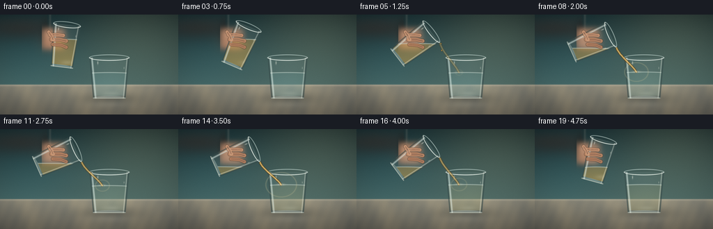
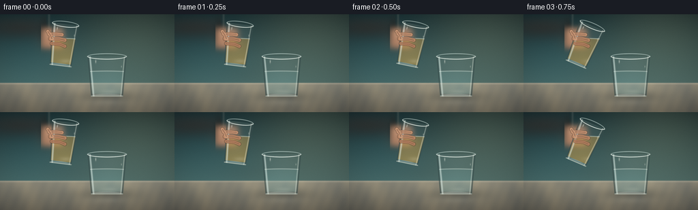

CODING AGENTS AS PIXEL WORLD MODELS
traex/DeepSeek-V4.1-Flash · phygen_138
点击播放 · 原生 RGB 像素
逐轮保存的候选
回放视频、检查图与代码变化。
每份候选均可单独播放。实际图片检查记录在下方工具轨迹中。
候选 01播放与检查图
点击播放 · 原生 RGB 像素


展开代码变化
--- 上一保存版本
+++ 本次保存版本
@@ -0,0 +1,402 @@
+from pathlib import Path
+
+import numpy as np
+from PIL import Image, ImageDraw, ImageFilter
+
+import artifact_io
+
+
+CASE_DIR = Path(__file__).resolve().parent
+W, H, N, FPS = 256, 144, 20, 4.0
+S = 4
+HW, HH = W * S, H * S
+
+
+def smoothstep(value):
+ value = np.clip(value, 0.0, 1.0)
+ return value * value * (3.0 - 2.0 * value)
+
+
+def mix(a, b, amount):
+ return a * (1.0 - amount) + b * amount
+
+
+def blend(rgb, color, mask):
+ alpha = np.clip(mask, 0.0, 1.0)[..., None]
+ return rgb * (1.0 - alpha) + np.asarray(color, dtype=np.float32) * alpha
+
+
+def transform_point(point, pivot, angle):
+ x, y = point
+ px, py = pivot
+ dx, dy = x - px, y - py
+ ca, sa = np.cos(angle), np.sin(angle)
+ return px + ca * dx - sa * dy, py + sa * dx + ca * dy
+
+
+def inverse_rotate(xx, yy, pivot, angle):
+ px, py = pivot
+ dx, dy = xx - px, yy - py
+ ca, sa = np.cos(angle), np.sin(angle)
+ return px + ca * dx + sa * dy, py - sa * dx + ca * dy
+
+
+def vessel_geometry(xx, yy, cx, top, bottom, half_top, half_bot, wall, angle=0.0, pivot=None):
+ if pivot is None:
+ pivot = (cx, (top + bottom) * 0.5)
+ lx, ly = inverse_rotate(xx, yy, pivot, angle)
+ t = np.clip((ly - top) / (bottom - top), 0.0, 1.0)
+ half_width = half_top + (half_bot - half_top) * t
+ dx = lx - cx
+ y_soft = np.minimum(ly - top, bottom - ly) * S
+ x_soft = (half_width - np.abs(dx)) * S
+ outer = smoothstep(y_soft * 0.8 + 0.5) * smoothstep(x_soft * 0.8 + 0.5)
+ inner_half = np.maximum(half_width - wall, 0.0)
+ inner = (
+ smoothstep(np.minimum(ly - top - 1.7, bottom - 3.8 - ly) * S * 0.9 + 0.5)
+ * smoothstep((inner_half - np.abs(dx)) * S * 0.9 + 0.5)
+ )
+ return lx, ly, dx, half_width, outer, inner
+
+
+def ellipse_mask(xx, yy, cx, cy, rx, ry):
+ value = 1.0 - ((xx - cx) / rx) ** 2 - ((yy - cy) / ry) ** 2
+ return smoothstep(value * 7.0 + 0.5)
+
+
+def local_ellipse_mask(lx, ly, cx, cy, rx, ry):
+ value = 1.0 - ((lx - cx) / rx) ** 2 - ((ly - cy) / ry) ** 2
+ return smoothstep(value * 7.0 + 0.5)
+
+
+def make_background(xx, yy):
+ vertical = np.clip(yy / 102.0, 0.0, 1.0)
+ wall = np.zeros((HH, HW, 3), dtype=np.float32)
+ wall[..., 0] = 25.0 + 48.0 * vertical
+ wall[..., 1] = 43.0 + 58.0 * vertical
+ wall[..., 2] = 45.0 + 52.0 * vertical
+
+ glow = np.exp(-(((xx - 207.0) / 92.0) ** 2 + ((yy - 20.0) / 74.0) ** 2))
+ wall += glow[..., None] * np.array([25.0, 23.0, 15.0], dtype=np.float32)
+ cool_fill = np.exp(-(((xx - 37.0) / 88.0) ** 2 + ((yy - 68.0) / 85.0) ** 2))
+ wall += cool_fill[..., None] * np.array([-5.0, 5.0, 9.0], dtype=np.float32)
+
+ grain = (
+ np.sin(xx * 0.080 + 2.3 * np.sin(yy * 0.035))
+ + 0.45 * np.sin(xx * 0.171 - yy * 0.047)
+ + 0.25 * np.sin(xx * 0.39 + yy * 0.16)
+ )
+ stone = np.zeros_like(wall)
+ depth = np.clip((yy - 101.0) / 43.0, 0.0, 1.0)
+ stone[..., 0] = 139.0 - 38.0 * depth
+ stone[..., 1] = 136.0 - 38.0 * depth
+ stone[..., 2] = 121.0 - 34.0 * depth
+ stone += (grain * 1.9 + 0.5)[..., None] * np.array([4.0, 3.0, 1.5], dtype=np.float32)
+ stone += np.exp(-(((xx - 157.0) / 105.0) ** 2))[..., None] * np.array([8.0, 7.0, 5.0], dtype=np.float32)
+
+ table_alpha = smoothstep((yy - 101.0) * S * 0.75 + 0.5)
+ image = mix(wall, stone, table_alpha[..., None])
+ edge_light = np.exp(-((yy - 102.0) / 1.35) ** 2) * 0.33
+ image = blend(image, [205, 197, 175], edge_light)
+
+ # Soft reflected pools keep the glassware visually seated on the counter.
+ shadow1 = np.exp(-(((xx - 157.0) / 43.0) ** 2 + ((yy - 121.0) / 8.5) ** 2))
+ shadow2 = np.exp(-(((xx - 108.0) / 52.0) ** 2 + ((yy - 91.0) / 17.0) ** 2))
+ image = blend(image, [36, 41, 39], shadow1 * 0.26 + shadow2 * 0.08)
+
+ reflection = np.exp(-(((xx - 157.0) / 26.0) ** 2 + ((yy - 129.0) / 5.0) ** 2))
+ image = blend(image, [221, 217, 198], reflection * 0.11)
+ return image
+
+
+def draw_sleeve_and_hand(image, xx, yy):
+ sleeve = (
+ np.exp(-(((xx - 31.0) / 65.0) ** 2 + ((yy - 19.0) / 16.0) ** 2))
+ * (xx < 70.0)
+ )
+ sleeve *= smoothstep((70.0 - xx) / 4.0)
+ image = blend(image, [44, 50, 49], sleeve * 0.94)
+
+ cuff = (
+ np.exp(-(((xx - 66.0) / 7.0) ** 2 + ((yy - 25.0) / 18.0) ** 2))
+ * (xx < 74.0)
+ )
+ image = blend(image, [30, 37, 37], cuff * 0.8)
+ image = blend(image, [118, 126, 119], np.exp(-((xx - 72.0) / 1.6) ** 2) * (yy < 46.0) * 0.26)
+
+ palm = (
+ np.exp(-(((xx - 76.0) / 18.0) ** 4 + ((yy - 35.0) / 16.0) ** 4))
+ * (xx > 60.0)
+ )
+ palm_shadow = np.exp(-(((xx - 77.0) / 19.0) ** 2 + ((yy - 39.0) / 15.0) ** 2))
+ image = blend(image, [124, 82, 65], palm_shadow * 0.25)
+ image = blend(image, [188, 136, 105], palm * 0.91)
+ image = blend(
+ image,
+ [232, 181, 145],
+ palm * np.exp(-(((xx - 69.0) / 5.0) ** 2 + ((yy - 28.0) / 9.0) ** 2)) * 0.28,
+ )
+ return image
+
+
+def draw_front_fingers(image):
+ layer = Image.new("RGBA", (HW, HH), (0, 0, 0, 0))
+ draw = ImageDraw.Draw(layer)
+
+ def capsule(points, width, fill, outline=None):
+ points = [(round(x * S), round(y * S)) for x, y in points]
+ draw.line(points, fill=fill, width=round(width * S), joint="curve")
+ radius = width * S / 2
+ for x, y in (points[0], points[-1]):
+ draw.ellipse((x - radius, y - radius, x + radius, y + radius), fill=fill)
+ if outline:
+ draw.line(points, fill=outline, width=max(1, round(width * S * 0.16)), joint="curve")
+
+ capsule([(72, 29), (84, 29), (91, 30)], 5.2, (202, 148, 113, 255), (119, 77, 61, 135))
+ capsule([(74, 36), (87, 36), (95, 38)], 5.6, (190, 135, 101, 255), (111, 70, 55, 140))
+ capsule([(76, 43), (88, 44), (95, 47)], 5.3, (180, 125, 93, 255), (104, 66, 53, 135))
+ capsule([(70, 25), (74, 31), (76, 36)], 5.0, (210, 157, 121, 255), (119, 77, 61, 130))
+
+ layer = layer.filter(ImageFilter.GaussianBlur(0.42 * S))
+ rgba = np.asarray(layer, dtype=np.float32) / 255.0
+ alpha = rgba[..., 3:4] * 0.95
+ return image * (1.0 - alpha) + rgba[..., :3] * 255.0 * alpha
+
+
+def render_vessel(image, xx, yy, params, surface, liquid, fill_tint, angle=0.0, pivot=None):
+ cx = params["cx"]
+ top = params["top"]
+ bottom = params["bottom"]
+ half_top = params["half_top"]
+ half_bot = params["half_bot"]
+ wall = params["wall"]
+ lx, ly, dx, half_width, outer, inner = vessel_geometry(
+ xx, yy, cx, top, bottom, half_top, half_bot, wall, angle, pivot
+ )
+
+ # A horizontal background shift makes the thick glass read as a refractive solid.
+ normalized = np.clip(dx / np.maximum(half_width, 1.0), -1.0, 1.0)
+ local_shift = -6.5 * normalized**3
+ sample_x = np.clip((xx + local_shift * np.cos(angle)) * S, 0, HW - 1).astype(np.int32)
+ sample_y = np.clip((yy + local_shift * np.sin(angle)) * S, 0, HH - 1).astype(np.int32)
+ refracted = image[sample_y, sample_x]
+ image = mix(image, refracted, (outer * 0.37)[..., None])
+
+ body_tint = np.array([194, 222, 217], dtype=np.float32)
+ body_amount = outer * (0.055 + 0.035 * (1.0 - normalized**2))
+ image = mix(image, body_tint, body_amount[..., None])
+
+ surface_curve = surface + 0.8 * normalized**2
+ liquid_mask = inner * smoothstep((yy - surface_curve) * S * 0.9 + 0.5)
+ depth = np.clip((yy - surface) / max(1.0, bottom - surface), 0.0, 1.0)
+ liquid_color = np.asarray(liquid, dtype=np.float32)
+ liquid_alpha = liquid_mask * (fill_tint[0] + fill_tint[1] * depth)
+ image = mix(image, liquid_color, liquid_alpha[..., None])
+
+ # Meniscus, submerged caustic and a darker bottom band give the liquid volume.
+ meniscus = inner * np.exp(-((yy - surface_curve) / 0.62) ** 2)
+ image = blend(image, [224, 238, 227], meniscus * 0.52)
+ caustic = inner * np.exp(-(((xx - (cx + half_top * 0.12)) / (half_top * 0.43)) ** 2 + ((yy - (bottom - 7.0)) / 3.2) ** 2))
+ image = blend(image, [245, 245, 217], caustic * 0.14)
+
+ wall_mask = np.clip(outer - inner, 0.0, 1.0)
+ image = blend(image, [72, 97, 95], wall_mask * 0.23)
+ dark_left = wall_mask * np.exp(-((dx + half_width - 1.1) / 1.35) ** 2)
+ dark_right = wall_mask * np.exp(-((dx - half_width + 1.0) / 1.2) ** 2)
+ image = blend(image, [35, 53, 53], np.maximum(dark_left, dark_right) * 0.45)
+
+ body_band = smoothstep((ly - top) * S * 0.8 + 0.5) * smoothstep((bottom - ly) * S * 0.8 + 0.5)
+ left_glint = body_band * np.exp(-((dx + half_width - 4.0) / 1.15) ** 2)
+ right_glint = body_band * np.exp(-((dx - half_width + 3.4) / 0.65) ** 2)
+ image = blend(image, [235, 249, 241], left_glint * 0.58)
+ image = blend(image, [246, 250, 236], right_glint * 0.42)
+
+ rim_outer = local_ellipse_mask(lx, ly, cx, top, half_top, 4.6)
+ rim_inner = local_ellipse_mask(lx, ly, cx, top, half_top - 1.55, 3.45)
+ rim = np.clip(rim_outer - rim_inner, 0.0, 1.0)
+ image = blend(image, [211, 231, 224], rim * 0.57)
+ rim_front = rim * smoothstep((ly - top + 0.3) * S * 0.8 + 0.5)
+ image = blend(image, [248, 251, 241], rim_front * 0.58)
+
+ base = local_ellipse_mask(lx, ly, cx, bottom - 0.8, half_bot, 3.3)
+ base = base * smoothstep((bottom - ly) * S * 0.6 + 0.5)
+ image = blend(image, [219, 234, 224], base * 0.27)
+ base_front = base * np.exp(-((ly - bottom + 0.5) / 0.55) ** 2)
+ image = blend(image, [247, 246, 224], base_front * 0.5)
+
+ # Sparse micro-glints suggest cut glass without overpowering the small frame.
+ glint1 = np.exp(-(((dx + half_top * 0.57) / 0.75) ** 2 + ((ly - (top + 7.5)) / 2.3) ** 2))
+ glint2 = np.exp(-(((dx - half_top * 0.73) / 0.55) ** 2 + ((ly - (top + 15.0)) / 1.4) ** 2))
+ image = blend(image, [255, 255, 240], np.maximum(glint1 * 0.5, glint2 * 0.36))
+ return image
+
+
+def bezier(points, t):
+ t = np.asarray(t)[:, None]
+ p0, p1, p2, p3 = [np.asarray(point, dtype=np.float32) for point in points]
+ u = 1.0 - t
+ return u**3 * p0 + 3.0 * u**2 * t * p1 + 3.0 * u * t**2 * p2 + t**3 * p3
+
+
+def draw_stream(image, p0, p3, strength, phase):
+ if strength <= 0.01:
+ return image
+ p0 = np.asarray(p0, dtype=np.float32)
+ p3 = np.asarray(p3, dtype=np.float32)
+ span = p3 - p0
+ controls = [
+ p0,
+ p0 + np.array([3.0 + 0.5 * np.sin(phase), span[1] * 0.31], dtype=np.float32),
+ p3 - np.array([4.0 + 0.5 * np.cos(phase), span[1] * 0.25], dtype=np.float32),
+ p3,
+ ]
+ t = np.linspace(0.0, 1.0, 36)
+ curve = bezier(controls, t)
+ layer = Image.new("RGBA", (HW, HH), (0, 0, 0, 0))
+ draw = ImageDraw.Draw(layer)
+ pts = [(round(x * S), round(y * S)) for x, y in curve]
+ draw.line(pts, fill=(125, 88, 39, round(220 * strength)), width=round(2.8 * S), joint="curve")
+ draw.line(pts, fill=(186, 139, 63, round(215 * strength)), width=round(1.75 * S), joint="curve")
+ draw.line(pts, fill=(241, 218, 156, round(180 * strength)), width=max(1, round(0.65 * S)), joint="curve")
+ layer = layer.filter(ImageFilter.GaussianBlur(0.28 * S))
+ rgba = np.asarray(layer, dtype=np.float32) / 255.0
+ alpha = rgba[..., 3:4]
+ return image * (1.0 - alpha) + rgba[..., :3] * 255.0 * alpha
+
+
+def draw_surface_effect(image, xx, yy, cx, surface, strength, phase, tint):
+ if strength <= 0.01:
+ return image
+ # A compact crown and two expanding rings sell the point of impact.
+ crown = (
+ np.exp(-(((xx - cx) / 5.2) ** 2 + ((yy - surface + 0.4) / 1.5) ** 2))
+ * strength
+ )
+ image = blend(image, [240, 237, 201], crown * 0.36)
+ ring = 0.0
+ for offset, weight in ((0.0, 1.0), (2.0, 0.45)):
+ radius = 3.0 + 7.5 * ((phase + offset) % 2.0)
+ ring += weight * np.exp(-(((np.sqrt(((xx - cx) / 1.25) ** 2 + (yy - surface) ** 2) - radius) / 0.72) ** 2))
+ image = blend(image, tint, ring * 0.16 * strength)
+ return image
+
+
+def draw_droplets(image, spout, t, active):
+ if not active:
+ return image
+ layer = Image.new("RGBA", (HW, HH), (0, 0, 0, 0))
+ draw = ImageDraw.Draw(layer)
+ for index in range(2):
+ local_t = (t * 1.45 + index * 0.47) % 1.0
+ x = spout[0] + 3.0 * local_t + 1.1 * np.sin(local_t * 8.0)
+ y = spout[1] + 17.0 * local_t**2
+ radius = 0.72 + 0.35 * local_t
+ draw.ellipse(
+ ((x - radius) * S, (y - radius * 1.3) * S, (x + radius) * S, (y + radius * 1.3) * S),
+ fill=(183, 137, 60, 210),
+ )
+ layer = layer.filter(ImageFilter.GaussianBlur(0.3 * S))
+ rgba = np.asarray(layer, dtype=np.float32) / 255.0
+ alpha = rgba[..., 3:4]
+ return image * (1.0 - alpha) + rgba[..., :3] * 255.0 * alpha
+
+
+def post_process(image, frame_index, xx, yy):
+ vignette = 1.0 - 0.22 * np.clip(
+ ((xx - W * 0.5) / (W * 0.68)) ** 2 + ((yy - H * 0.48) / (H * 0.78)) ** 2,
+ 0.0,
+ 1.25,
+ )
+ image *= vignette[..., None]
+ # Gentle highlight roll-off and restrained film grain.
+ image = 255.0 * (image / 255.0) ** 0.96
+ rng = np.random.default_rng(4400 + frame_index)
+ grain = rng.normal(0.0, 1.35, (HH, HW, 1)).astype(np.float32)
+ image += grain
+ return np.clip(image, 0.0, 255.0)
+
+
+def render_frame(frame_index):
+ x = (np.arange(HW, dtype=np.float32) + 0.5) / S
+ y = (np.arange(HH, dtype=np.float32) + 0.5) / S
+ xx, yy = np.meshgrid(x, y)
+ image = make_background(xx, yy)
+
+ t = frame_index / FPS
+ angle_deg = (
+ 7.0
+ + 59.0 * smoothstep((t - 0.25) / 1.45)
+ - 51.0 * smoothstep((t - 3.62) / 1.18)
+ )
+ angle = np.deg2rad(angle_deg)
+ pour = smoothstep((t - 0.82) / 0.95) * (1.0 - smoothstep((t - 3.78) / 0.62))
+ drained = smoothstep((t - 0.95) / 2.75)
+ target_rise = 2.3 * smoothstep((t - 1.2) / 2.8)
+
+ target = dict(cx=157.0, top=62.0, bottom=121.0, half_top=29.0, half_bot=23.5, wall=2.1)
+ source = dict(cx=94.0, top=14.0, bottom=76.0, half_top=20.0, half_bot=16.3, wall=1.9)
+ source_pivot = (90.0, 33.0)
+ target_surface = 83.5 - target_rise
+ spout_local = (source["cx"] + source["half_top"], source["top"])
+ spout = transform_point(spout_local, source_pivot, angle)
+ source_surface = max(35.5 + 19.0 * drained, spout[1] + 1.2)
+
+ image = draw_sleeve_and_hand(image, xx, yy)
+
+ water_tint = mix(
+ np.array([119.0, 169.0, 166.0]),
+ np.array([156.0, 156.0, 113.0]),
+ smoothstep((t - 1.0) / 3.2) * 0.58,
+ )
+ image = render_vessel(
+ image,
+ xx,
+ yy,
+ target,
+ target_surface,
+ water_tint,
+ (0.16, 0.16),
+ )
+
+ image = render_vessel(
+ image,
+ xx,
+ yy,
+ source,
+ source_surface,
+ [174.0, 129.0, 54.0],
+ (0.26, 0.14),
+ angle,
+ source_pivot,
+ )
+ image = draw_front_fingers(image)
+
+ entry_x = 147.0 + 0.9 * np.sin(t * 2.3)
+ entry_y = target_surface + 0.8
+ stream_strength = pour * (0.92 + 0.08 * np.sin(t * 13.0))
+ image = draw_stream(image, spout, (entry_x, entry_y), stream_strength, t * 8.0)
+ image = draw_surface_effect(
+ image,
+ xx,
+ yy,
+ entry_x,
+ target_surface,
+ stream_strength,
+ t * 1.7,
+ [214, 201, 151],
+ )
+ image = draw_droplets(image, spout, t, 0.05 < stream_strength < 0.62)
+ image = post_process(image, frame_index, xx, yy)
+
+ frame = Image.fromarray(image.astype(np.uint8)).resize((W, H), Image.Resampling.LANCZOS)
+ return np.asarray(frame, dtype=np.uint8)
+
+
+def main():
+ frames = np.stack([render_frame(index) for index in range(N)], axis=0)
+ artifact_io.save(frames, CASE_DIR)
+ print(f"saved {frames.shape} RGB frames to {CASE_DIR}")
+
+
+if __name__ == "__main__":
+ main()
候选 02播放与检查图
点击播放 · 原生 RGB 像素


展开代码变化
--- 上一保存版本
+++ 本次保存版本
@@ -255,9 +255,9 @@
layer = Image.new("RGBA", (HW, HH), (0, 0, 0, 0))
draw = ImageDraw.Draw(layer)
pts = [(round(x * S), round(y * S)) for x, y in curve]
- draw.line(pts, fill=(125, 88, 39, round(220 * strength)), width=round(2.8 * S), joint="curve")
- draw.line(pts, fill=(186, 139, 63, round(215 * strength)), width=round(1.75 * S), joint="curve")
- draw.line(pts, fill=(241, 218, 156, round(180 * strength)), width=max(1, round(0.65 * S)), joint="curve")
+ draw.line(pts, fill=(126, 84, 29, round(230 * strength)), width=round(3.2 * S), joint="curve")
+ draw.line(pts, fill=(203, 146, 53, round(225 * strength)), width=round(2.0 * S), joint="curve")
+ draw.line(pts, fill=(248, 223, 151, round(195 * strength)), width=max(1, round(0.72 * S)), joint="curve")
layer = layer.filter(ImageFilter.GaussianBlur(0.28 * S))
rgba = np.asarray(layer, dtype=np.float32) / 255.0
alpha = rgba[..., 3:4]
@@ -331,7 +331,7 @@
angle = np.deg2rad(angle_deg)
pour = smoothstep((t - 0.82) / 0.95) * (1.0 - smoothstep((t - 3.78) / 0.62))
drained = smoothstep((t - 0.95) / 2.75)
- target_rise = 2.3 * smoothstep((t - 1.2) / 2.8)
+ target_rise = 3.6 * smoothstep((t - 1.2) / 2.8)
target = dict(cx=157.0, top=62.0, bottom=121.0, half_top=29.0, half_bot=23.5, wall=2.1)
source = dict(cx=94.0, top=14.0, bottom=76.0, half_top=20.0, half_bot=16.3, wall=1.9)
@@ -344,9 +344,9 @@
image = draw_sleeve_and_hand(image, xx, yy)
water_tint = mix(
- np.array([119.0, 169.0, 166.0]),
- np.array([156.0, 156.0, 113.0]),
- smoothstep((t - 1.0) / 3.2) * 0.58,
+ np.array([116.0, 171.0, 169.0]),
+ np.array([184.0, 162.0, 93.0]),
+ smoothstep((t - 1.0) / 3.2) * 0.78,
)
image = render_vessel(
image,
@@ -364,8 +364,8 @@
yy,
source,
source_surface,
- [174.0, 129.0, 54.0],
- (0.26, 0.14),
+ [210.0, 155.0, 59.0],
+ (0.34, 0.15),
angle,
source_pivot,
)
可观测工具轨迹
实际执行的命令与返回图片。
命令 1exit 0
/bin/bash -c "sed -n '1,240p' prompt.txt"
命令 2exit 0
/bin/bash -c "sed -n '1,280p' GENERATION_RULES.md"
命令 3exit 0
/bin/bash -c 'cat task_spec.json'
命令 4exit 0
/bin/bash -c "find . -maxdepth 2 -type f -printf '%p\\n' | sort | sed -n '1,240p'"
命令 5exit 0
/bin/bash -c "sed -n '1,260p' artifact_io.py"
命令 6exit 0
/bin/bash -c "sed -n '1,260p' player_template.html"
命令 7exit 0
/bin/bash -c "python - <<'PY' import importlib.util for m in ['numpy','PIL','cv2','imageio','matplotlib']: print(m, bool(importlib.util.find_spec(m))) PY"
命令 8exit 0
/bin/bash -c 'git status --short'
命令 9exit 0
/bin/bash -c 'python generate.py'
命令 10exit 0
/bin/bash -c 'command -v chafa || command -v viu || command -v img2txt || true'
命令 11exit 0
/bin/bash -c 'ls -lh frames/*.png pixels.npz index.html inspection.png | tail -n 8'
命令 12exit 0
/bin/bash -c "python - <<'PY'
from PIL import Image
import numpy as np
for i in [0,4,8,12,16,19]:
a=np.array(Image.open(f'frames/{i:02d}.png'))
print(i, 'mean',a.mean((0,1)).round(1), 'minmax',a.min(),a.max())
PY"命令 13exit 0
/bin/bash -c "python - <<'PY'
from PIL import Image
import numpy as np
im=np.array(Image.open('frames/08.png').convert('RGB'))
# ANSI truecolor half blocks, 64x36 samples, crop full frame
im=Image.fromarray(im).resize((64,36),Image.Resampling.LANCZOS)
a=np.array(im)
for y in range(0,36,2):
line=[]
for x in range(64):
r,g,b=a[y,x]; r2,g2,b2=a[min(y+1,35),x]
line.append(f'\\x1b[38;2;{r};{g};{b}m\\x1b[48;2;{r2};{g2};{b2}mâ')
print(''.join(line)+'\\x1b[0m')
PY"命令 14exit 0
/bin/bash -c "python - <<'PY'
from PIL import Image, ImageOps, ImageFilter
import numpy as np
chars=' .,:;irsXA253hMHGS#9B&@'
for f in [0,4,8,12,16,19]:
im=Image.open(f'frames/{f:02d}.png').convert('L').resize((64,36),Image.Resampling.LANCZOS)
a=np.asarray(im).astype(float)
a=(a-a.min())/(a.max()-a.min())
print('\\nFRAME',f)
for row in a:
print(''.join(chars[min(len(chars)-1,int(v*(len(chars)-1)))] for v in row))
PY"命令 15exit 0
/bin/bash -c "python - <<'PY'
from PIL import Image
import numpy as np
for f in [0,4,8,12,16,19]:
a=np.array(Image.open(f'frames/{f:02d}.png'))
print(f, 'target center',a[95,157], 'target surf',a[84,157], 'source',a[40,92], 'stream',a[65,130], 'rim',a[63,157])
PY"命令 16exit 0
/bin/bash -c "python - <<'PY'
from PIL import Image
import numpy as np
for f in range(20):
a=np.array(Image.open(f'frames/{f:02d}.png'))
# source liquid sample around x=92,y=50 to 70; stream gold pixels between 108-145, 65-84
src=a[55:72,82:106].astype(float)
gold=((src[...,0]-src[...,1]>15)&(src[...,1]-src[...,2]>20)).mean()
crop=a[58:86,108:146].astype(float)
sgold=((crop[...,0]-crop[...,1]>18)&(crop[...,1]-crop[...,2]>20)).mean()
print(f'{f:02d} srcgold={gold:.3f} streamgold={sgold:.3f} targetmid={a[95,157].tolist()} top={a[85,157].tolist()}')
PY"命令 17exit 0
/bin/bash -c "python - <<'PY'
from PIL import Image
import numpy as np
for f in [0,4,8,12,16,19]:
im=Image.open(f'frames/{f:02d}.png')
# upscale 3x for closer visual interpretation, save compact preview in .tmp
im.resize((768,432),Image.Resampling.NEAREST).save(f'.tmp/preview_{f:02d}.png')
PY"命令 18exit 0
/bin/bash -c 'python generate.py'
命令 19exit 0
/bin/bash -c "python - <<'PY'
from PIL import Image
import numpy as np, json
frames=np.stack([np.array(Image.open(f'frames/{i:02d}.png')) for i in range(20)])
assert frames.shape==(20,144,256,3) and frames.dtype==np.uint8
# Changes over time and spatial sanity.
diffs=np.abs(frames[1:].astype(np.int16)-frames[:-1].astype(np.int16)).mean((1,2,3))
print('mean frame diff range',float(diffs.min()),float(diffs.max()))
print('unique colors frame 0/8/19',len(np.unique(frames[0].reshape(-1,3),axis=0)),len(np.unique(frames[8].reshape(-1,3),axis=0)),len(np.unique(frames[19].reshape(-1,3),axis=0)))
for f in [0,4,8,12,16,19]:
a=frames[f].astype(float)
print(f, 'center',a[95,157].astype(int).tolist(),'surface',a[84,157].astype(int).tolist(),'streamboxgold',int(((a[58:86,108:146,0]-a[58:86,108:146,1]>18)&(a[58:86,108:146,1]-a[58:86,108:146,2]>20)).sum()))
z=np.load('pixels.npz')
print('pixels',z['pixels'].shape,z['pixels'].dtype)
print('index bytes',__import__('pathlib').Path('index.html').stat().st_size)
PY"命令 20exit 0
/bin/bash -c "python - <<'PY'
from PIL import Image
import numpy as np
chars=' .,:;irsXA253hMHGS#9B&@'
for f in [0,4,8,12,16,19]:
im=Image.open(f'frames/{f:02d}.png').convert('L').resize((64,36),Image.Resampling.LANCZOS)
a=np.asarray(im).astype(float)
a=(a-a.min())/(a.max()-a.min())
print('\\nFRAME',f)
for row in a:
print(''.join(chars[min(len(chars)-1,int(v*(len(chars)-1)))] for v in row))
PY"命令 21exit 0
/bin/bash -c "python - <<'PY'
from PIL import Image
import numpy as np
for f in [0,4,8,12,16,19]:
a=np.array(Image.open(f'frames/{f:02d}.png')).astype(float)
# representative source-liquid interior, target-liquid interior, and backdrop
print(f'{f:02d} source={a[62,94].astype(int)} target={a[100,157].astype(int)} bg={a[30,230].astype(int)}')
PY"命令 22exit 0
/bin/bash -c "python -m py_compile generate.py && python - <<'PY'
import json, pathlib, numpy as np
from PIL import Image
p=pathlib.Path('.')
spec=json.loads((p/'task_spec.json').read_text())
frames=sorted((p/'frames').glob('*.png'))
assert len(frames)==spec['frames']==20
assert all(Image.open(f).size==(spec['width'],spec['height']) for f in frames)
pix=np.load(p/'pixels.npz')['pixels']
assert pix.shape==(spec['height'],spec['width'],spec['frames'])
assert (p/'index.html').is_file() and (p/'inspection.png').is_file()
print('validated:',len(frames),'frames,',spec['width'],'x',spec['height'],'at',spec['fps'],'fps')
print('artifacts:',', '.join(x for x in ['pixels.npz','index.html','inspection.png','transition_check.png','generate.py'] if (p/x).exists()))
PY"保存候选 2 份；完成命令 22 次；可验证图片返回 0 张。原始 API 响应与完整日志保留在本地。